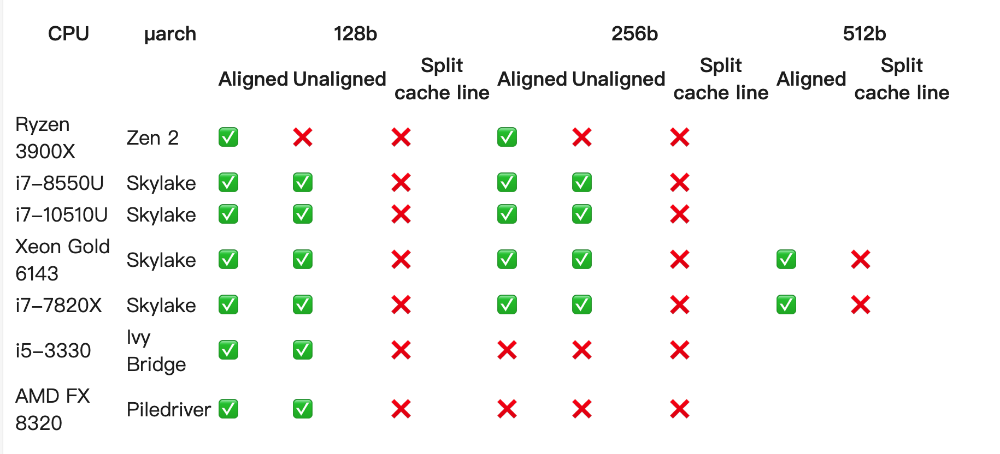

我们已经知道，标准库中的 atomic 针对 int32/uint32、int64/uint64 提供了原子操作的方法和函数，但是如果针对 128 bit 的整数呢？
当然使用128 bit 整数的原子操作的场景可能比较少，也不会有太多人有这个需求，但是如果我们需要对几个 32 bit、64 bit 变量进行原子操作吗， atomic128 可能就很有用。
tmthrgd/atomic128 在几年前提供了 atomic 128 的实验性功能，最后放弃了，但是他提供了一个思路，可以使用 CMPXCHG16B 指令为 AMD 64 架构的CPU 提供 atomic 128 功能。
CAFxX/atomic128 fork 了上面的项目，继续维护，还是使用 CMPXCHG16B 指令，只为 AMD 64 架构提供原子操作。
首先我们看看它的功能然后再看一看它的实现，最后我们思路发散一下，看看使用 AVX 为 128 bit 甚至更多 bit 的整数提供原子操作是否可行。
atomic128 的方法
Package atomic128 实现了对 128 bit值的原子操作。在可能的情况下（例如，在支持 CMPXCHG16B 的 amd64 处理器上），它会自动使用 CPU 的原生特性来实现这些操作；否则，它会回退到基于互斥锁（mutexes）的方法。
Go 的基本整数中不包含 int128/uint128，所以这个库先定义了一个 Int128 的类型：
|
|
然后类似标准库 atomic 中对各种整数的操作，它也提供了类似的方法：
|
|
可以看到，除了正常的 Add、CAS、Load、Store、Swap 函数，还贴心的提供了 Or、And、Xor 三个位操作的函数。
下面是一个简单的例子:
|
|
atomic128 的实现
聪明的你也许看到Uint128的定义的时候就会感觉有一点不对劲，为啥128bit的整数要用3个64bit的整数来表示呢？ 2个Uint64不就够了吗？
这是为了保证128位对齐，类似的技术在Go 1.20之前的WaitGroup中也有使用。进一步了解可以查看：
通过包含三个Uint64元素的数组，我们总能通过下面的方法得到128位对齐的地址：
|
|
通过变量useNativeAmd64判断CPU是否支持CMPXCHG16B指令：
|
|
如果不支持，回退到使用Mutex实现一个低效的atomic 128bit原子操作:
|
|
如果支持CMPXCHG16B指令，直接调用compareAndSwapUint128amd64函数：
|
|
主要依赖CMPXCHG16B实现。
CMPXCHG16B是一条X86体系结构中的指令,全称为"Compare and Exchange 16 Bytes"。它用于原子地比较和交换16个字节(128位)的内存区域。
这条指令的作用是:
- 将要比较的16个字节的内存值加载到一个寄存器中。
- 将要写入的16个字节的值加载到另一个寄存器中。
- 比较内存中的值和第一个寄存器中的值是否相等。
- 如果相等,则用第二个寄存器中的值覆盖内存中的值。
- 根据比较结果,设置相应的标志位。
思路发散
当前很多号称性能优化的库，可能会使用SIMD指令集来提高性能，比如AVX、SSE等。那么，我们是否可以使用AVX指令集来实现对128位整数甚至256、512位整数的原子操作呢？
有一篇很好的文章介绍了这方面的探索:Aligned AVX loads and stores are atomic。
各家处理器手册中并没有为AVX指令集提供原子性的担保。The AMD64 Architecture Programmer’s Manual只是保证了内存操作最大8个字节，CMPXCHG16B是原子的。The Intel® 64 and IA-32 Architectures Software Developer’s Manual也做了类似的保证。此外，Intel手册明确指出AVX指令没有任何原子性保证。
这篇文章的作者做了实验，得出下面的结论:

尽管看起来对齐的 128 位操作室原子的，但是 CPU 提供商没有提供担保，我们还是使用 CMPXCHG16B 指令保险。